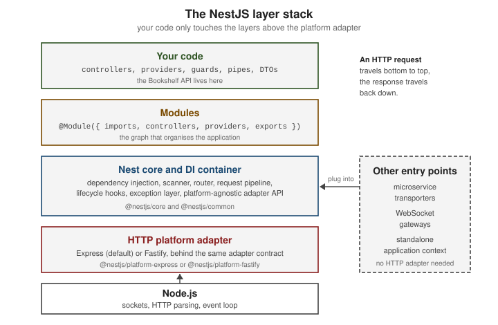

Introduction & Architecture
|
This content was generated with the assistance of AI and should be verified against the official documentation before being relied on in production. |
This page is written against NestJS 12.1 (npm @nestjs/core 12.1.2, published 2026-09-30), Node.js 20.19+ or 22.12+
(the floor for running v12 applications), TypeScript 6 (6.0.x, what the Nest 12 templates install), Express 5.2 and
Fastify 5.12, all current as of 2026-10-02. It explains what NestJS is made of and where it fits, before the rest of the
section starts building the Bookshelf — a small books/authors/reviews service used as the running scenario.
Philosophy
Nest (NestJS) is a framework for building server-side Node.js applications. It is written in and fully supports TypeScript, while still letting you write plain JavaScript, and it combines elements of OOP (object-oriented programming), FP (functional programming) and FRP (functional reactive programming, through RxJS).
Node.js already has plenty of libraries and tools, but none of them solves the main problem of architecture. Nest provides an out-of-the-box application architecture that lets teams build testable, scalable, loosely coupled and maintainable applications. That architecture is heavily inspired by Angular: applications are organised in modules, behaviour is declared with decorators, and objects are wired together by a dependency-injection container rather than by hand. A developer who knows Angular, or Spring Boot (see Spring Boot Core Concepts), will recognise most of the vocabulary.
-
OOP — controllers and providers are classes; dependencies arrive through constructors.
-
FP — handlers are plain functions of their inputs, and request-processing steps (pipes, guards, interceptors) are small composable units.
-
FRP — handlers and interceptors may return RxJS
Observablestreams, which Nest subscribes to for you.
Nest sits one level above the HTTP server library: it provides an abstraction over Express and Fastify, but also exposes their APIs directly, so the ecosystem of third-party modules for the underlying platform stays available.
Source: NestJS: Introduction
Building blocks
A Nest application is a graph of modules. Each module groups the controllers that receive requests and the providers that hold the logic, and declares which providers it shares with other modules. Enhancers — middleware, guards, interceptors, pipes and exception filters — wrap the handlers with cross-cutting behaviour.
| Building block | Role | Declared with |
|---|---|---|
Module |
A unit of organisation: lists the controllers and providers it owns, the modules it imports and the providers it exports. |
|
Controller |
Maps incoming requests to handler methods and returns the response. |
|
Provider |
Any injectable class — services, repositories, factories, helpers. The dependency-injection container instantiates and shares it. |
|
Middleware |
A function that runs before the route handler, with access to the request and response objects. |
|
Guard |
Decides whether a request may reach the handler (authentication and authorization). |
|
Interceptor |
Wraps the handler: runs code before and after it, and can transform the result or the error. |
|
Pipe |
Validates or transforms handler arguments. |
|
Exception filter |
Turns thrown exceptions into responses. |
|
The smallest useful Bookshelf feature has a provider, a controller and a module. The provider holds the data, the controller exposes it, and the module ties both together.
// books.service.ts
import { Injectable } from '@nestjs/common';
export interface Book {
id: number;
title: string;
}
@Injectable()
export class BooksService {
private readonly books: Book[] = [{ id: 1, title: 'Dune' }];
findAll(): Book[] {
return this.books;
}
}// books.controller.ts
import { Controller, Get } from '@nestjs/common';
import { BooksService, type Book } from './books.service.js';
@Controller('books')
export class BooksController {
constructor(private readonly books: BooksService) {}
@Get()
findAll(): Book[] {
return this.books.findAll();
}
}// books.module.ts
import { Module } from '@nestjs/common';
import { BooksController } from './books.controller.js';
import { BooksService } from './books.service.js';
@Module({
controllers: [BooksController],
providers: [BooksService],
exports: [BooksService],
})
export class BooksModule {}Nothing in BooksController creates a BooksService: the container reads the constructor parameter type and injects
the shared instance. This is the dependency injection described in more detail in
Providers & Dependency Injection; the .js import
suffixes are the ESM convention of the current template (CommonJS projects omit them).
Enhancers attach to a class or a method with a decorator. The interceptor below measures how long a handler takes,
using only Nest’s own abstractions (ExecutionContext, CallHandler, RxJS operators) so it works on any platform.
// timing.interceptor.ts
import {
Injectable,
Logger,
type CallHandler,
type ExecutionContext,
type NestInterceptor,
} from '@nestjs/common';
import type { Observable } from 'rxjs';
import { tap } from 'rxjs/operators';
@Injectable()
export class TimingInterceptor implements NestInterceptor {
private readonly logger = new Logger(TimingInterceptor.name);
intercept(context: ExecutionContext, next: CallHandler): Observable<unknown> {
const started = Date.now();
const handler = `${context.getClass().name}.${context.getHandler().name}`;
return next.handle().pipe(
tap(() => this.logger.log(`${handler} took ${Date.now() - started} ms`)),
);
}
}Applying it to the controller is one decorator: add @UseInterceptors(TimingInterceptor) above @Controller('books')
(and import UseInterceptors from @nestjs/common). The order in which the enhancers run is covered in
Request Lifecycle.
Source: NestJS: Interceptors
The platform layer: Express and Fastify
Nest is platform-agnostic: components such as modules, providers, guards, pipes and interceptors do not depend on the HTTP server library. What connects Nest to a server is a platform adapter, a package whose job is to proxy routing, middleware and handlers to the library-specific implementation. Two adapters ship with the framework:
@nestjs/platform-express |
@nestjs/platform-fastify |
|
|---|---|---|
Underlying library |
Express (5.2 at the time of writing) |
Fastify (5.12 at the time of writing) |
Default |
Yes — no setup is required |
No — pass a |
Strength |
Largest ecosystem of compatible middleware |
Lower overhead; the official docs describe it as significantly faster than Express in benchmarks |
Request and response objects |
Express |
Fastify |
Listening address |
Same as Node.js |
Listens on |
Express-specific packages (for example Express middleware) |
Work as usual |
May not work; use the Fastify equivalents |
Because the abstraction is thin, switching platform is mostly a change in main.ts. Express is the default:
// main.ts (Express, the default)
import { NestFactory } from '@nestjs/core';
import { AppModule } from './app.module.js';
async function bootstrap() {
const app = await NestFactory.create(AppModule);
await app.listen(process.env.PORT ?? 3000);
}
await bootstrap();For Fastify, pass the adapter and use the platform-specific application type to get typed access to Fastify’s API:
// main.ts (Fastify)
import { NestFactory } from '@nestjs/core';
import {
FastifyAdapter,
type NestFastifyApplication,
} from '@nestjs/platform-fastify';
import { AppModule } from './app.module.js';
async function bootstrap() {
const app = await NestFactory.create<NestFastifyApplication>(
AppModule,
new FastifyAdapter(),
);
await app.listen(process.env.PORT ?? 3000, '0.0.0.0');
}
await bootstrap();The same BooksController answers on both platforms. The curl call below behaves identically whichever adapter is
active.
curl http://localhost:3000/books[{ "id": 1, "title": "Dune" }]When a handler injects the platform’s own response object with @Res(), it becomes platform-specific, because
Express and Fastify expose different methods (for example, Express res.setHeader() has no counterpart with that name
on a Fastify reply). Keeping handlers on Nest’s abstractions — return values, @Header(), interceptors — is what
keeps them portable. The adapter itself is available as app.getHttpAdapter(), or by injecting HttpAdapterHost,
when the underlying server is needed. The differences between the two platforms are detailed on the pages that
touch them, such as Controllers & Routing and
Middleware and
Fastify & HTTP Platforms.
The next figure shows how the layers stack up. An HTTP request travels from Node.js up through the adapter and the Nest core to your controller; the response travels back down.

Application types
The Nest core and its dependency-injection container are not tied to HTTP, so the same modules and providers can run in four kinds of application. A fifth style, GraphQL, is an API layer on top of an HTTP application rather than a type of its own.
shared business logic] M --> H[HTTP application
NestFactory.create] M --> S[Microservice
NestFactory.createMicroservice] M --> Y[Hybrid application
HTTP + connectMicroservice] M --> A[Standalone application
createApplicationContext] H --> HP[Express or Fastify adapter] S --> ST[Transporter: TCP, Redis, NATS, Kafka, ...] Y --> HP Y --> ST A --> N[No network listener]
-
HTTP application —
NestFactory.create()builds an application that serves REST, GraphQL, SSE and WebSockets through an adapter. This is the default shape and the one used in the previous examples. -
Microservice —
NestFactory.createMicroservice()builds an application that listens through a transporter (TCP, Redis, NATS, Kafka, RabbitMQ, gRPC and others) instead of HTTP, and handles messages with@MessagePattern()and@EventPattern(). -
Hybrid application — an HTTP application that also listens for microservice messages. It is built by calling
connectMicroservice()on the HTTP application, thenstartAllMicroservices(). -
Standalone application —
NestFactory.createApplicationContext()creates the dependency-injection container without any network listener, which is useful for scheduled scripts and CLIs that reuse the application’s services.
The Bookshelf messaging handler below is a controller that answers a message pattern instead of an HTTP route. It
reuses the same BooksService.
// books.messages.ts
import { Controller } from '@nestjs/common';
import { MessagePattern } from '@nestjs/microservices';
import { BooksService, type Book } from './books.service.js';
@Controller()
export class BooksMessagesController {
constructor(private readonly books: BooksService) {}
@MessagePattern({ cmd: 'books.list' })
list(): Book[] {
return this.books.findAll();
}
}The four ways of starting an application differ only in how the entry point is created. The first two lines of each
block below are the whole difference; AppModule stands for the module with BooksModule imported, and
MessagesModule for a module that imports BooksModule and registers BooksMessagesController.
import { NestFactory } from '@nestjs/core';
import { Transport, type MicroserviceOptions } from '@nestjs/microservices';
// 1. HTTP application
const http = await NestFactory.create(AppModule);
await http.listen(3000);
// 2. Microservice (TCP transporter)
const micro = await NestFactory.createMicroservice<MicroserviceOptions>(MessagesModule, {
transport: Transport.TCP,
options: { host: '127.0.0.1', port: 4011 },
});
await micro.listen();
// 3. Hybrid application: HTTP plus a connected microservice
const hybrid = await NestFactory.create(AppModule);
hybrid.connectMicroservice<MicroserviceOptions>({
transport: Transport.TCP,
options: { host: '127.0.0.1', port: 4012 },
});
await hybrid.startAllMicroservices();
await hybrid.listen(3001);
// 4. Standalone application: the container only
const ctx = await NestFactory.createApplicationContext(AppModule);
const books = ctx.get(BooksService).findAll();
await ctx.close();Each application type has its own page: Microservices Fundamentals and Platform Agnosticism & Standalone Apps.
How NestJS compares
NestJS is not a competitor of the HTTP libraries below so much as a layer over two of them: Express and Fastify are the engines Nest can run on. The table compares the programming model each project offers; versions are the latest on npm on 2026-10-02.
| Framework | What it is | What you get out of the box | What you decide yourself |
|---|---|---|---|
NestJS (12.1) |
An opinionated application framework in TypeScript, running on Express or Fastify. |
Modules, dependency injection, decorators, a request pipeline (middleware, guards, interceptors, pipes, filters), microservices, WebSockets, GraphQL and OpenAPI packages, testing utilities, a CLI. |
Which data, validation and authentication libraries to pair with it; the choice is wide, but the structure is given. |
Express (5.2) |
A fast, unopinionated, minimalist web framework. |
Routing and a middleware chain. |
Everything else: structure, validation, dependency management, error-handling conventions. |
Fastify (5.12) |
A fast, low-overhead web framework with a plugin architecture. |
Routing, plugins with encapsulation, schema-based validation and serialization. |
Application structure and dependency management beyond plugins. |
Koa (3.2) |
A small framework from the Express team built around async middleware and a per-request context object. |
Middleware composition and the context object; no bundled router. |
Routing library, validation, structure. |
hapi (21.4) |
A configuration-centric framework with a plugin system, focused on enterprise back ends. |
Routing, input validation, authentication and caching hooks, and a plugin system, as framework features. |
Data access and the overall application layering. |
AdonisJS (7.5) |
A batteries-included, MVC-style TypeScript framework. |
Router, ORM, authentication, validation, mail, templating and a CLI, all from the same project. |
Fewer choices to make: the stack is integrated and prescribed. |
Hono (4.13) |
A small web framework built on Web Standards ( |
Routing and middleware that run on several JavaScript runtimes, not only Node.js. |
Structure, validation and data access. |
A few guidelines follow from the table:
-
Choose NestJS when a team or codebase will grow, and a shared structure, dependency injection and a testing story matter more than a minimal footprint. It costs more ceremony than a bare framework for a tiny service.
-
Choose Express, Fastify, Koa or Hono directly for small services, adapters and runtimes where the framework’s size matters; Nest can still adopt the first two later because it runs on top of them.
-
Choose hapi or AdonisJS when their built-in conventions already match your needs.
Feature claims above come from each project’s official site; check them before relying on a detail, since these projects evolve independently.
The same idea in other stacks
NestJS shares most of its architecture with frameworks outside the Node.js world. These pages of this documentation cover the same concepts for other stacks:
-
FastAPI: Introduction & Architecture and FastAPI: Dependency Injection — Python; type-hint-driven, with dependency injection through
Depends. -
Spring Boot Core Concepts and Spring Boot REST APIs — Java; the closest match to Nest’s modules, controllers and injected services.
-
Quarkus and Quarkus CDI and the Programming Model — Java; a CDI-based, build-time-optimised counterpart.
History and versioning
Nest was first published to npm in May 2017 and has had a new major version roughly every one to two years. The table lists the majors from v10 onward, with the npm publication date of the first release of each.
| Version | First published | Notes |
|---|---|---|
10 |
2023-06-15 |
Last major before the long v11 cycle; the |
11 |
2025-01-16 |
Express 5 as the default platform, with the new path-to-regexp wildcard syntax. Later minors added features such as the HTTP |
12 |
2026-08-27 |
ESM-ready packages, Standard Schema support for validation and serialization, a rebuilt CLI, and native observability through |
The official documentation does not publish a formal long-term-support schedule. What the release history does show is the following:
a major release ships with a migration guide and, since v12, a nest upgrade command that moves every @nestjs/*
package to the matching major and applies the mechanical changes; the npm dist-tags show the current line (latest),
the previous major still receiving patches (legacy) and an older one (old); and first-party packages (for example
@nestjs/typeorm or @nestjs/graphql) are released in step with the core major. Plan to stay on a supported major,
pin versions, and read the migration guide before every upgrade — covered in
What’s Changed & Migration.
Where older material is outdated, and what changed recently
Older books and tutorials describe a Nest that predates the current defaults. When following one, keep these points in mind:
-
Express 5 is the default platform since v11. Express 4 routes using a bare
*wildcard do not behave the same; the new syntax is covered in Controllers & Routing. -
Node.js floor. v12 applications need Node.js 20.19+ or 22.12+, because the core packages are now ESM-ready and load through
require(esm)in CommonJS projects. -
ESM and Vitest are the template defaults. New projects generated with the v12 CLI are ESM and use Vitest; CommonJS with Jest is still available. Imports of local files carry a
.jssuffix under ESM. -
TypeScript 6 is what the v12 templates install; TypeScript 7 is current on npm but is not what
nest newgenerates, so do not assume Nest supports it. -
Linting in the generated project moved to oxlint.
-
Observability has a first-party SDK,
@nestjs/observe(pre-1.0), plugged in through theinstrumentapplication option. -
Pre-1.0 first-party packages exist for authentication, authorization, mail, storage and others; they are described as pre-1.0 on the pages that use them.